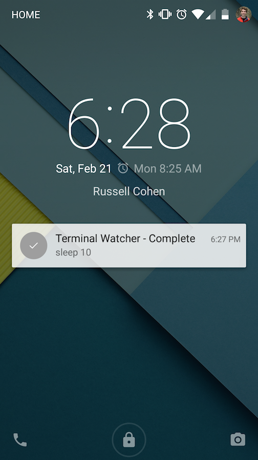

Terminal Watcher
Terminal Watcher is an android app and desktop client that combine to send you push notifications when shell scripts complete. To use it, preface your command with tw. You'll get a push notification when it finishes along with the exit status.
Installation
Terminal watcher has two parts: A desktop client and an android app. To install the desktop client: (OS X and Linux)
curl -L "https://raw.githubusercontent.com/rcoh/terminal-watcher/master/installer.sh" | bash
Then install the Android App The Android app source is at: https://github.com/rcoh/tw-android
Usage
Once installed, run a command as you normally would be preface it with tw. The start, end, and exit status code will be sent to your phone. Eg:
bash $ tw sleep 10
# Ten seconds later...
